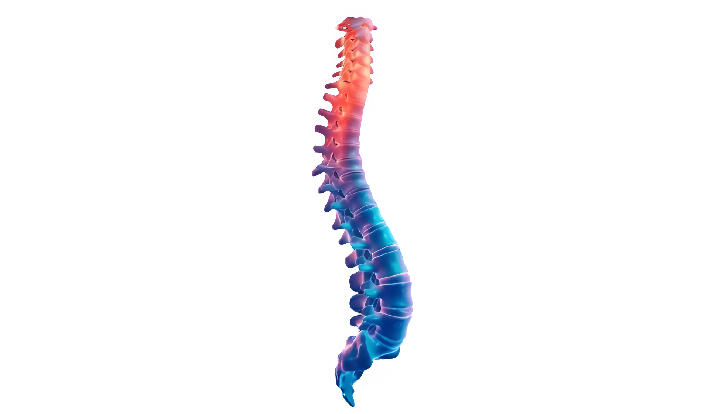

Reimagining Care Through
Intelligent Insights.
A research and advisory group combining machine learning, business tools, and deep clinical expertise to re-examine and optimize the way we deliver modern healthcare.

Patient Outcome Predictions
Time
Operational Efficiency
Pre
Post
Key Performance Indicator
Decision Accuracy